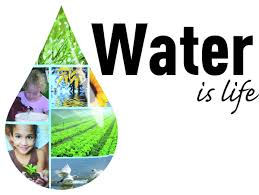

Big Names in Water Sanitation
The following organizations are helping in the fight for clean water. Check them out.

charity:water |

miya Arison Group |

Water.org |

Columbia Water Center |

WaterIsLife |

PureMadi |